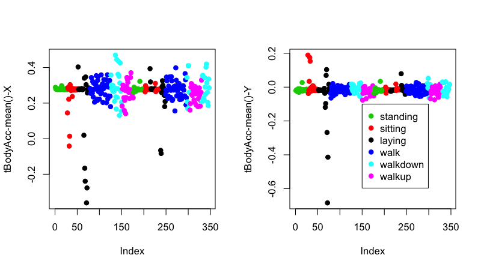
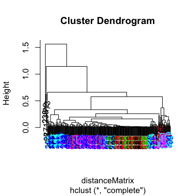
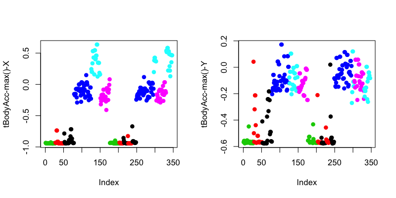
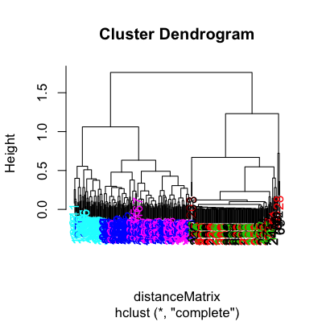
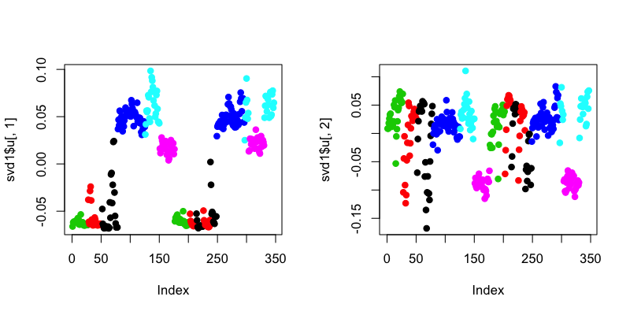
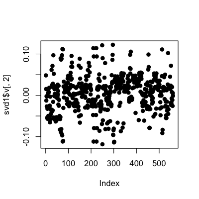
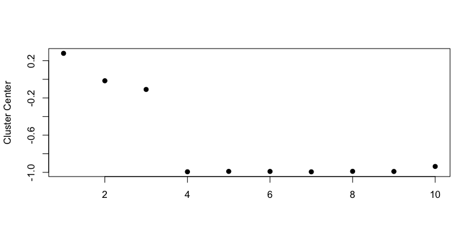
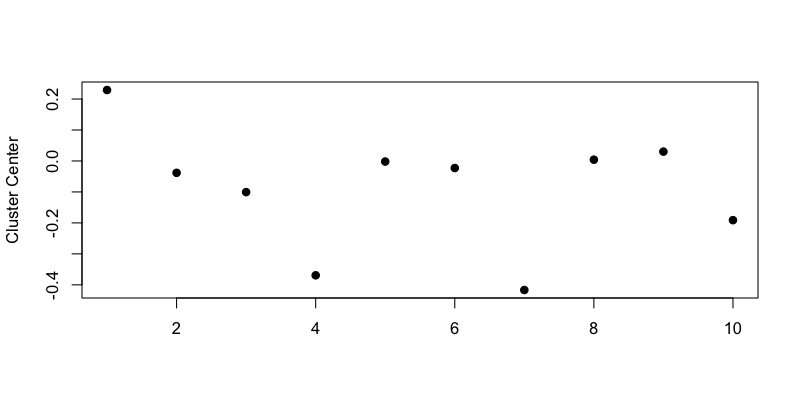

Clustering example
Jeffrey Leek, Assistant Professor of Biostatistics
Johns Hopkins Bloomberg School of Public Health
Samsung Galaxy S3
Samsung Data

http://archive.ics.uci.edu/ml/datasets/Human+Activity+Recognition+Using+Smartphones
Slightly processed data
download.file("https://dl.dropbox.com/u/7710864/courseraPublic/samsungData.rda"
,destfile="./data/samsungData.rda",method="curl")
load("./data/samsungData.rda")
names(samsungData)[1:12]
[1] "tBodyAcc-mean()-X" "tBodyAcc-mean()-Y" "tBodyAcc-mean()-Z" "tBodyAcc-std()-X"
[5] "tBodyAcc-std()-Y" "tBodyAcc-std()-Z" "tBodyAcc-mad()-X" "tBodyAcc-mad()-Y"
[9] "tBodyAcc-mad()-Z" "tBodyAcc-max()-X" "tBodyAcc-max()-Y" "tBodyAcc-max()-Z"
table(samsungData$activity)
laying sitting standing walk walkdown walkup
1407 1286 1374 1226 986 1073
Plotting average acceleration for first subject
par(mfrow=c(1,2))
numericActivity <- as.numeric(as.factor(samsungData$activity))[samsungData$subject==1]
plot(samsungData[samsungData$subject==1,1],pch=19,col=numericActivity,ylab=names(samsungData)[1])
plot(samsungData[samsungData$subject==1,2],pch=19,col=numericActivity,ylab=names(samsungData)[2])
legend(150,-0.1,legend=unique(samsungData$activity),col=unique(numericActivity),pch=19)

Clustering based just on average acceleration
source("http://dl.dropbox.com/u/7710864/courseraPublic/myplclust.R")
distanceMatrix <- dist(samsungData[samsungData$subject==1,1:3])
hclustering <- hclust(distanceMatrix)
myplclust(hclustering,lab.col=numericActivity)

Plotting max acceleration for the first subject
par(mfrow=c(1,2))
plot(samsungData[samsungData$subject==1,10],pch=19,col=numericActivity,ylab=names(samsungData)[10])
plot(samsungData[samsungData$subject==1,11],pch=19,col=numericActivity,ylab=names(samsungData)[11])

Clustering based on maximum acceleration
source("http://dl.dropbox.com/u/7710864/courseraPublic/myplclust.R")
distanceMatrix <- dist(samsungData[samsungData$subject==1,10:12])
hclustering <- hclust(distanceMatrix)
myplclust(hclustering,lab.col=numericActivity)

Singular value decomposition
svd1 = svd(scale(samsungData[samsungData$subject==1,-c(562,563)]))
par(mfrow=c(1,2))
plot(svd1$u[,1],col=numericActivity,pch=19)
plot(svd1$u[,2],col=numericActivity,pch=19)

Find maximum contributor
plot(svd1$v[,2],pch=19)

New clustering with maximum contributer
maxContrib <- which.max(svd1$v[,2])
distanceMatrix <- dist(samsungData[samsungData$subject==1,c(10:12,maxContrib)])
hclustering <- hclust(distanceMatrix)
myplclust(hclustering,lab.col=numericActivity)

New clustering with maximum contributer
names(samsungData)[maxContrib]
[1] "fBodyAcc-meanFreq()-Z"
K-means clustering (nstart=1, first try)
kClust <- kmeans(samsungData[samsungData$subject==1,-c(562,563)],centers=6)
table(kClust$cluster,samsungData$activity[samsungData$subject==1])
laying sitting standing walk walkdown walkup
1 42 45 53 0 0 0
2 0 0 0 0 26 0
3 0 0 0 45 0 0
4 0 0 0 50 0 0
5 0 0 0 0 23 0
6 8 2 0 0 0 53
K-means clustering (nstart=1, second try)
kClust <- kmeans(samsungData[samsungData$subject==1,-c(562,563)],centers=6,nstart=1)
table(kClust$cluster,samsungData$activity[samsungData$subject==1])
laying sitting standing walk walkdown walkup
1 0 0 0 27 1 0
2 0 0 0 46 0 0
3 0 0 0 22 0 0
4 8 2 0 0 0 53
5 0 0 0 0 48 0
6 42 45 53 0 0 0
K-means clustering (nstart=100, first try)
kClust <- kmeans(samsungData[samsungData$subject==1,-c(562,563)],centers=6,nstart=100)
table(kClust$cluster,samsungData$activity[samsungData$subject==1])
laying sitting standing walk walkdown walkup
1 0 37 51 0 0 0
2 18 10 2 0 0 0
3 0 0 0 95 0 0
4 0 0 0 0 49 0
5 29 0 0 0 0 0
6 3 0 0 0 0 53
K-means clustering (nstart=100, second try)
kClust <- kmeans(samsungData[samsungData$subject==1,-c(562,563)],centers=6,nstart=100)
table(kClust$cluster,samsungData$activity[samsungData$subject==1])
laying sitting standing walk walkdown walkup
1 29 0 0 0 0 0
2 0 0 0 0 49 0
3 0 0 0 95 0 0
4 18 10 2 0 0 0
5 0 37 51 0 0 0
6 3 0 0 0 0 53
Cluster 1 Variable Centers (Laying)
plot(kClust$center[1,1:10],pch=19,ylab="Cluster Center",xlab="")

Cluster 2 Variable Centers (Walking)
plot(kClust$center[6,1:10],pch=19,ylab="Cluster Center",xlab="")
